計算の復習分数

通分・約分・逆数から答えまで、式でつなぐ
1:36
同じ大きさのまま、分母をそろえる
0:23
割り算と分数のつながりを等式で確かめる
0:50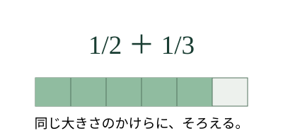
同じ大きさにそろえて、分数を合わせる。
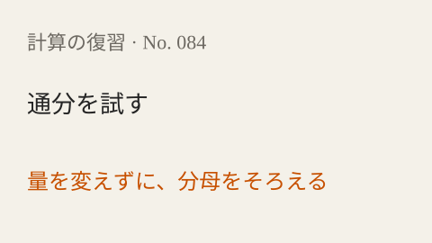
量を変えずに分母をそろえる過程を、式と図で確かめる。
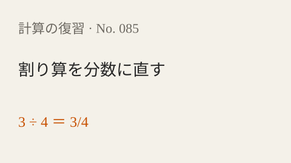
等分して1人分を求め、割り算と分数の関係を確かめる。
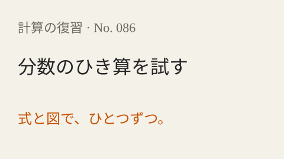
同じ大きさにそろえて、分数を取り除く。
分数の積と約分を、図と一段ずつの式で確かめる。
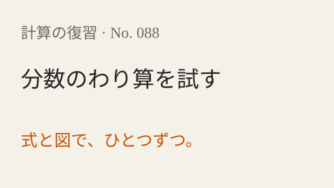
何組分あるかを図で捉え、逆数をかける式につなぐ。
中1・0章算数から数学へ
中1・1章正の数・負の数

符号を確かめ、式と答えを等号でつなぐ
1:52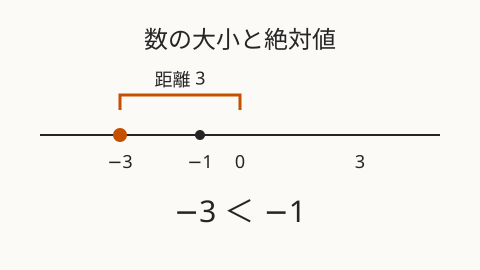
2つの数を動かし、数直線の左右で大小を比べる。
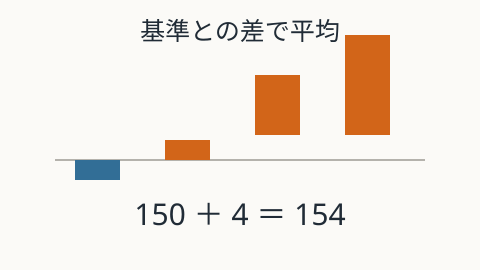
差を正負の数で表し、差の平均から基準へ戻す。
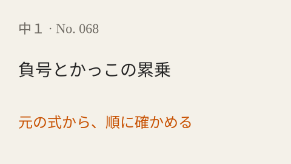
同じ底と指数で−aⁿと(−a)ⁿを比べ、負号とかっこの意味を確かめる。
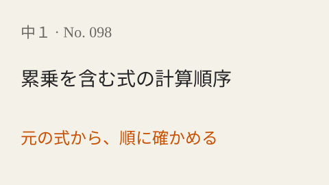
累乗・乗除・加減の順に、元の式から一段ずつ計算する。
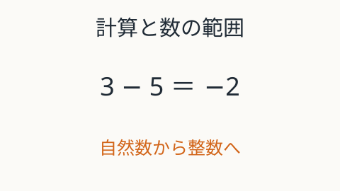
自然数・整数・分数と、計算結果の範囲を確かめる。
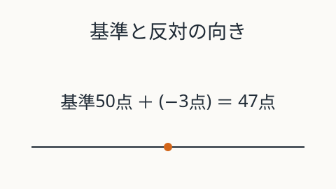
温度・高さ・得点の基準から、正負の向きを確かめる。
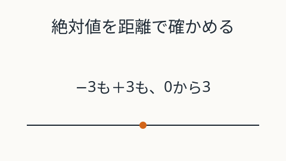
0からの距離を図で見て、絶対値を確かめる。
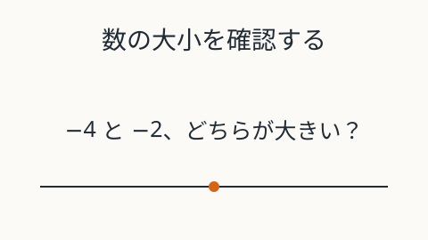
6問から選び、次へ進みながら数の大小と等しさを確かめる。
4問を選んで解き、答えと理由を確かめる。
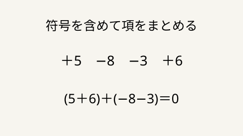
引き算を足し算に直し、符号を保って項を整理する。
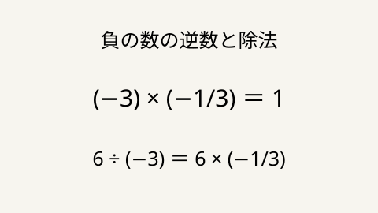
積が1になる逆数を見つけ、割り算をかけ算に直す。
中1・2章文字と式

同じ種類の項をまとめ、式と答えをつなぐ
2:25
大きな条件と矢印で、符号ごと代入
2:16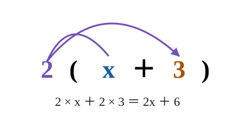
かっこの前の数を、各項にかける
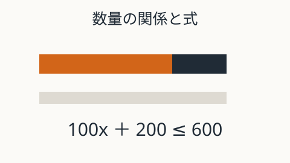
数量の関係を等式・不等式で表し、境目を確かめる。
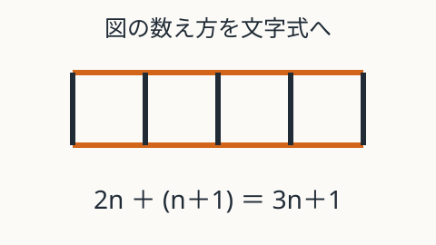
正方形の棒を3通りに数え、個数nを使った式へ一般化する。
4問を選んで解き、答えと理由を確かめる。
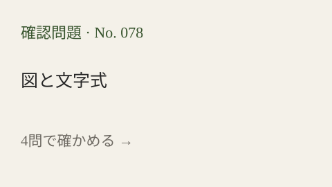
4問を選んで解き、答えと理由を確かめる。
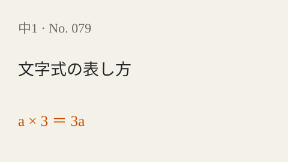
積・商・累乗の書き方を、代入して確かめる。
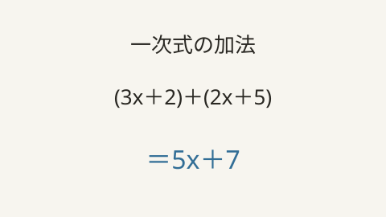
括弧を外し、文字の項と定数項をそれぞれまとめる。
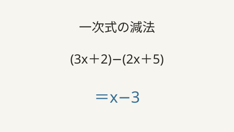
括弧を外し、文字の項と定数項をそれぞれまとめる。
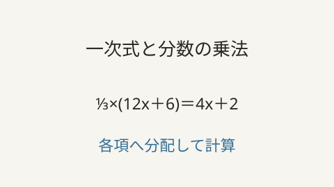
分数と式全体のまとまりを確かめ、各項に分配する。
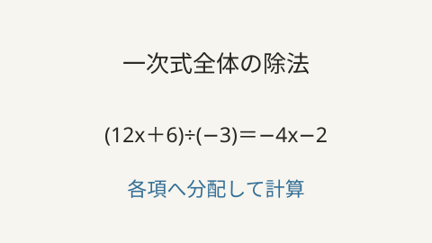
分数と式全体のまとまりを確かめ、各項に分配する。
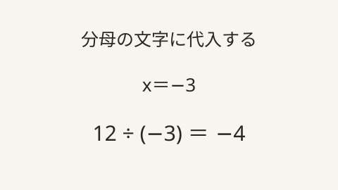
分母に正負の整数を入れ、符号と0除外を確かめる。
中1・3章方程式
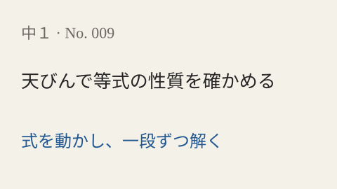
両辺に同じ操作をして、つり合いを保ちながら方程式を解く。
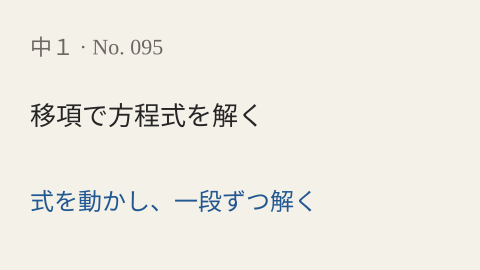
項を反対の辺へ動かし、符号の変化と計算の履歴を確かめる。
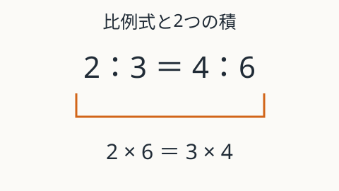
同じ比への倍率と、外項・内項の積の関係を比べる。
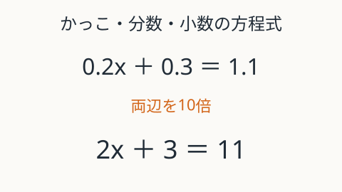
両辺の倍率を変え、解が変わらないことを確かめる。
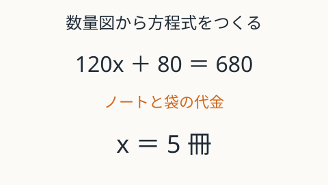
買い物・周の長さ・速さを式へつなぎ、解が場面に合うか確かめる。
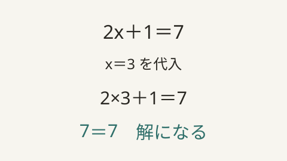
候補を元の式の両辺へ代入し、等式が成り立つかで解を判定する。
中1・4章比例と反比例

表・式・グラフの関係を大きな式で確認
2:37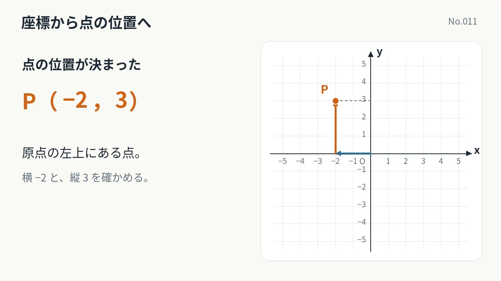
横のx、次に縦のy。負の座標・軸上・原点・分数の点を順にたどる。
1:24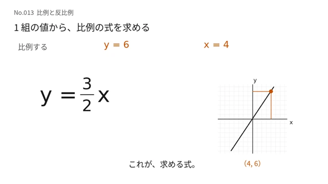
1組の値から比例定数を求めて式を完成し、代入して確かめる。
1:50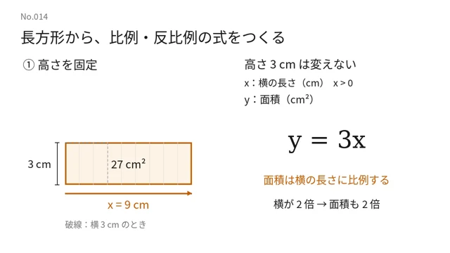
高さや面積を固定し、x・yの意味と単位を決めて比例・反比例の式をつくる。
1:44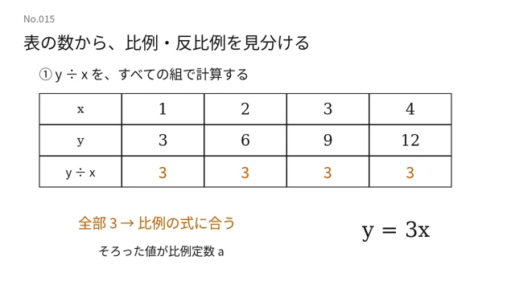
表のすべての組で商と積を計算し、比例・反比例・どちらでもないを判断する。
1:59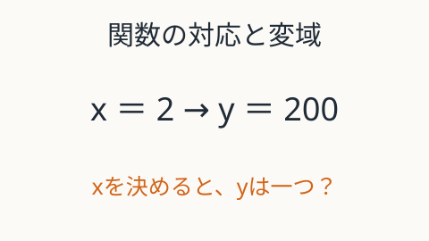
一意対応と、離散・連続の変域や端点を比べる。
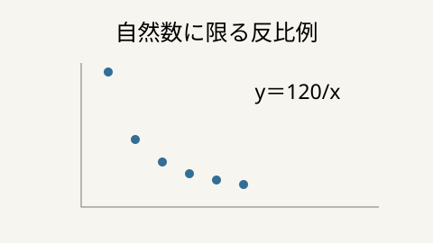
120cmのひもの等分数と長さを、自然数の点で表す。
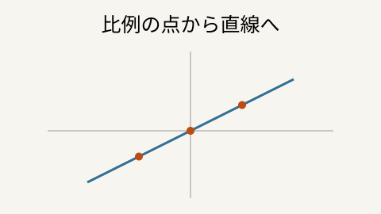
整数の間にも座標を取り、比例の式と直線の対応を確かめる。
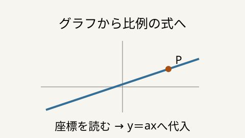
グラフの点を読み、座標を代入して比例定数を求める。
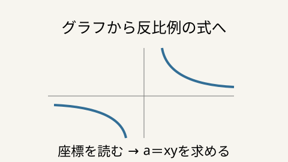
曲線の点を読み、座標の積から反比例の式を求める。
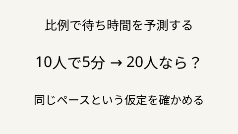
一定ペースを仮定して予測し、前提が変わる場合と比べる。
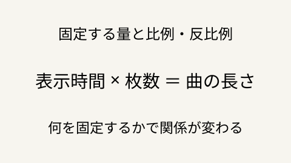
1枚の表示時間 × 写真の枚数 ＝ 曲の長さ。切替時間は含めません。
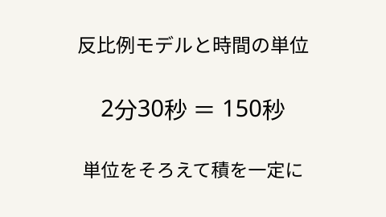
出力 × 時間が一定という仮定で、単位をそろえて計算します。
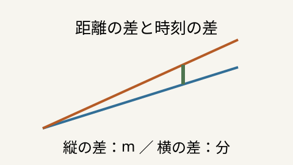
同時刻の縦の差と、同地点の横の差を読み分ける。
中1・5章平面図形
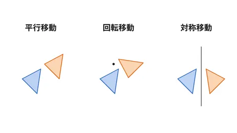
平行・回転・対称移動
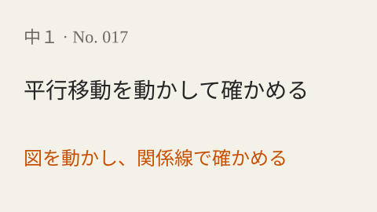
移動した三角形をドラッグし、対応点の向きと長さを確かめる。
中心や三角形をドラッグし、回転角と中心からの距離を確かめる。
対称軸を動かし、対応点を結ぶ線と軸の関係を確かめる。
垂直二等分線・角の二等分線・垂線
弧の端と半径を動かし、円周から弧の長さを求める。
弧の端と半径を動かし、円の面積から面積を求める。
円周に中心角の倍率をかけ、弧の長さを求める。
円の面積に中心角の倍率をかけ、面積を求める。
どの点も同じ向きに同じ長さだけ移り、対応点を結ぶ線が平行になる。
中心からの距離を保ち、対応する点が同じ角度だけ回る。
対応点を結ぶ線が軸と垂直になり、軸からの距離が等しくなる。
2地点から等距離の点を動かし、垂直二等分線を使う理由を確かめる。
2本の道からの垂直な距離を比べ、二等分線の理由を確かめる。
線分ABと半直線AC・BDへの垂直距離が等しい点を求め、その距離を半径に円を描く。
道上の点を動かし、点から道への最短距離を確かめる。
直線上の点から等距離の二点を取り、円と弧で垂線を作図する。
接点を通る半径への垂線を作図し、円の接線を求める。
頂点から底辺を含む直線へ垂線を下ろし、辺の外に足がある場合も確かめる。
円弧上の三点から垂直二等分線を作り、中心と半径を復元する。
指定直線と垂直二等分線の共通点で、2つの条件を満たす点を探す。
中1・6章空間図形
面を1回転させて立体に
角度を変えて立体をつくる
側面のおうぎ形の中心角
見取図と立面図・平面図
母線・弧・底面の円周を一緒に見る
立方体の辺と面を選び、平行・垂直・ねじれの位置を比べる。
底面の形が違っても、底面積と高さから体積を求める。
同じ底面積・高さの柱を基準に、体積が3分の1になることを確かめる。
半径と基準の円柱を図で確かめ、球の体積を求める。
柱・錐の展開図で、底面と側面の面積を足して表面積を求める。
半径rの円4枚分の面積と比較し、4πr²を確かめる。
立方体の平面と1辺を変え、垂線で距離を測る。
柱・錐・球を、底面・側面・頂点から見分ける。
面の内部・周の跡・移動距離から、柱体と側面と高さを確かめる。
軸を含む平面と、軸に垂直な平面で切り口を比べます。
球の中心から切る平面までの距離と、断面円の大きさを比べます。
中1・7章データの分析と活用
中2・1章式の計算
符号を含む項から、係数と次数を順に読み取る。
x²・xy・y²を区別し、同類項の係数どうしを足す。
引く式の全項の符号を変え、同類項をまとめる。
すべての項に同じ数を掛け、分数係数も計算する。
0以外の数の逆数を、式全体に掛ける。
通分して分子全体を足し、同類項と約分を確かめる。
通分し、引く分子の全項の符号を変えて計算する。
係数を掛け、同じ文字の因数の個数を足す。
除数全体の逆数を掛け、文字の因数を約分する。
括弧全体を繰り返し掛け、係数と文字を累乗する。
左からの計算を逆数の積に直し、係数と文字を整理する。
先に式を簡単にし、直接代入した値と比べる。
具体例から任意の整数nへ進み、3nの形で説明する。
消える文字と残る文字から、代金の変化を説明する。
両辺への操作と割る条件を確かめ、目的の文字を単独にする。
中2・2章連立方程式
同じ値の組を2式へ代入し、両方が成り立つか調べる。
式全体を倍して係数を揃え、1文字の消去から検算へ進む。
文字を式全体で置き換え、表す式・文字による手間を比べる。
括弧・小数・分数を整理し、元と同じ解をもつ2式へ。
3つが同じ値という条件を、2つの等式で表す。
数量表から2つの条件を式にし、解が場面に合うか確かめる。
数量表から2つの条件を式にし、解が場面に合うか確かめる。
数量表から2つの条件を式にし、解が場面に合うか確かめる。
中2・3章1次関数
点Pの移動と△APDの面積
傾きと切片を動かして関係をつかむ
横・縦の変化からaを求め、点を代入してbを求める。
傾きの正負と開閉端を比べ、対応するyの範囲を求める。
横と縦の増加量を図で見て、傾きを計算する
1:48傾きが既知のとき、通る点から切片を決めて検算する。
式を満たす値の組と、座標平面上の点の関係を確かめる。
式を満たす値の組と、座標平面上の点の関係を確かめる。
表・点・変化割合を根拠に、予測の仮定と限界を考える。
停止と出発時刻を区間式で表し、交点を移動の場面へ戻す。
動く辺による高さの違いを、区間式と面積グラフに結ぶ。
目盛りと切片、2点の変化から傾きと式を読み取る。
中2・4章平行と合同
対頂角は等しい
同位角・錯角を見る
180° ×（n − 2）
外角を集めると360°
形を変えても360°
辺・角を変えて、合同の3条件を比べる
平行な補助線と錯角をつなぎ、内角の和から未知角を求める。
仮定と対頂角を根拠に、合同から対応する辺へつなぐ。
同位角・錯角の逆と、対頂角だけでは判断できない理由。
辺の印から頂点・辺・角を対応させ、合同の記号を正しい順で書く。
内角和と一直線の180°を結び、外角の性質を説明する。
結論から使う三角形を選び、仮定・共通の辺・錯角を合同条件へ結ぶ。
同じ半径と共通辺から合同を示し、角を二等分できる理由へ結ぶ。
中2・5章三角形と四角形
頂点を動かして5つの条件
定義の2辺の等しさから、底辺の中点と合同を使って底角の性質を示す。
頂角の二等分から合同を示し、底辺の中点と垂直を導く。
等しい角と共通の辺を根拠に、底角の性質の逆を証明する。
二等辺三角形の性質とその逆を使い、3辺相等・3角相等・60°の関係を理由とともにつなぎます。
仮定と結論を分け、一つの反例による否定と一般的な証明の違いを確かめます。
直角・斜辺・対応を確かめ、斜辺と一鋭角、斜辺と他の一辺の条件を使い分けます。
平行という定義から、対辺・対角・対角線の性質を合同で証明します。
5条件から2組の対辺の平行を導き、定義に戻って結論する理由を確認します。
辺と角の定義から分類し、正方形が長方形にもひし形にも含まれる関係を確かめます。
対角線の等しさ・垂直から形を判定する理由と、平行四辺形という前提の大切さを調べます。
長方形を作る補助線から、斜辺の中点が3頂点から等しい距離にある理由を示します。
対角線の等しさを示す証明と仮定を照合し、不要な条件と反例が生じる条件を区別します。
頂点を平行線上で動かし、同じ底辺と高さによる等積と、その逆に必要な条件を確かめます。
平行線で等積な三角形を作り、共通部分を足す理由を追って四角形を三角形に変形します。
確率・統計中学
確率・統計有名な問題
確率・統計高校・大学
教材が見つかりませんでした
短い言葉で検索するか、絞り込みを解除してください。